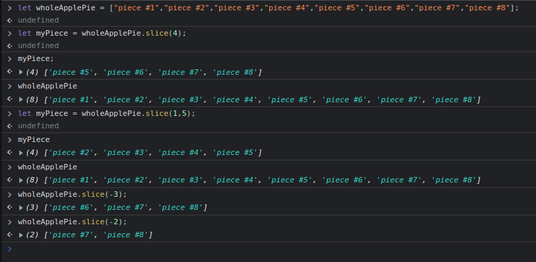
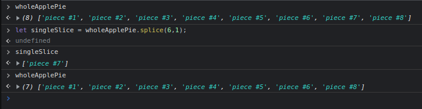
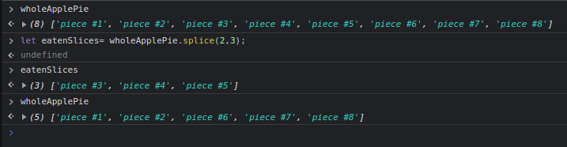
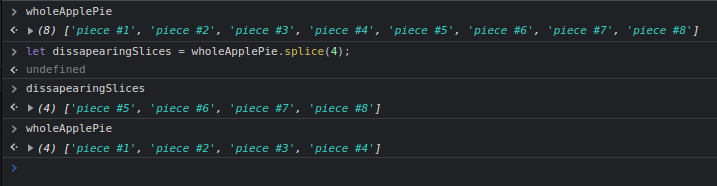
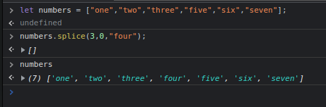
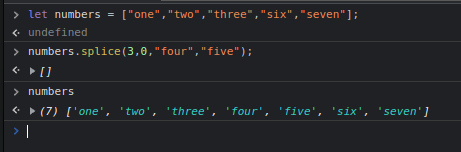
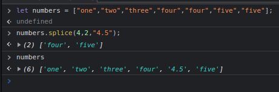

This method helps us grab a slice of an array, or slice it.
It takes a starting point and an ending point which is optional.
The starting point alone will include the inde we enter and go all the way to the end of the array.
Entering both a starting and ending point is different, the ending point index will not be included in our returning sliced array!
If we do not pass any points, (leave it blank), it will create a copy of the array.
Whatever we slice will not affect the original array, it will be unchanged.
We can even enter a negative index, it would return that number starting from the end of the array, in a reverse order.
The splice method helps us do many things, this method is destructive, so it will actually change the array we are workking with.
First we will use it to delete an array index.
We will need the starting index, which would be the index of the item we want to delete. And the number of items we are deleting.
Here is an example of deleting 1 item, 3 items and starting at one index all the way to the end.
  We can also add items to our array as needed, it uses the same syntax, but we need to include the item as an argument in our .splice() method.
Here we add one item, first we enter the index where we want our new item to be, specifying that we do not want to delete any items (The 0). And then our array item.
But we can also add multiple items at the same time.
Or delete multiple and add one.
This one helps us sort items in an array.
By default it does not really sort say an array of numbers, we can use functions for this.